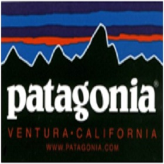
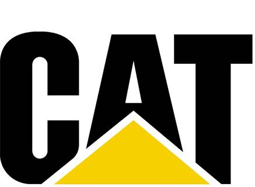

Introduction - Reuse/Redistribution
Direct Secondary Re-usage or resale extends the product life by second hand use. Therefore, fewer products,
which serve for the same purpose, have to be produced (Truttmann, Rechberger, 2006). The reused products can be
the complete products, or can be components of the product which are then sold (Amelia et al 2009). Re-usage of
a component or product should be considered against the energy consumption throughout its lifetime. For example
older electrical and electronic equipment tends to consume more energy and this might offset the achievements of
product life extension (Truttmann, Rechberger, 2006).
In addition to the resale business it is possible to offer:
- Testing and certification
- Re-warranty
- Cleaning/Valeting
Benefits
- Prevents the need for further materials to be used for new products
- Reuse can increase profits by reducing materials and energy costs
- Reduces impact to the environment
- Reduces dependency on new components (Amelia et al 2009)
Considerations
| Competition | Potentially strong competition including from the internet or local used product suppliers. | A good reputation service can be provided with added value such as quality checks, warranty and cleaning. |
| Quality and Company Reputation | Poor quality products or parts can damage company reputation. | Reputation of the business provides reassurance to the customer and a product with appropriate quality checks and warranty can provide peace of mind to the customer. |
| Competitive Pricing | Price needs to be substantially low enough to drive sales for the second hand goods whilst being profitable. | A competitive price brings customers for second hand sales and can lead to future servicing/maintenance and new product sales. |
| Volume of Demand | Low demand possible of used products with erratic sales and costly inventory. | Advertisement can improve demand as can a good company and product reputation. |
| Volume of Supply | Low supply of used products reduces profits. | Create and incentivise take-back networks to increase volume of supply. |
| Price Transparency | Lack of price transparency leads to confusion and distrust. Consistency required between ‘stores’. | Keep pricing transparent through standard prices and price calculators. |
| Competition | Potentially strong competition from the internet or local used-product suppliers | Can collaborate with local suppliers, internet auction stores or establish own second hand sales internet platform |
Product Design
The products appropriate for direct secondary re-usage can be very varied, providing there is demand for a product and the price is right for the customer. Consider internet auction sites which resell a complete variety of products at different prices, levels of quality, remaining lifetimes, delivery times and service that is provided to the customer.
Collection
Collection of the product can be relatively straightforward for direct secondary re-usage. As the owner physically has the item and wants money from it, they are incentivised to pass-on the product to the next owner, be it to another customer, a product distributor or third party provider. The types of collection are:
- Customer-to-customer delivery
- Customer-to-distributor/manufacturer
- Customer-to-third party collection provider
Case studies
-

Patagonia work with eBay to sell used Patagonia clothing. The website allows you to browse worn Patagonia clothes, whilst promoting the company’s corporate responsibility values. The website is also linked to Patagonia’s main website to allow internet traffic to pass. Link
-

Caterpillar has a website to trade second hand lifting and excavating equipment from Caterpillar and other manufacturers. Caterpillar also provides the added value of inspection, certification, parts, servicing, repairs, financing and extended service coverage. Link